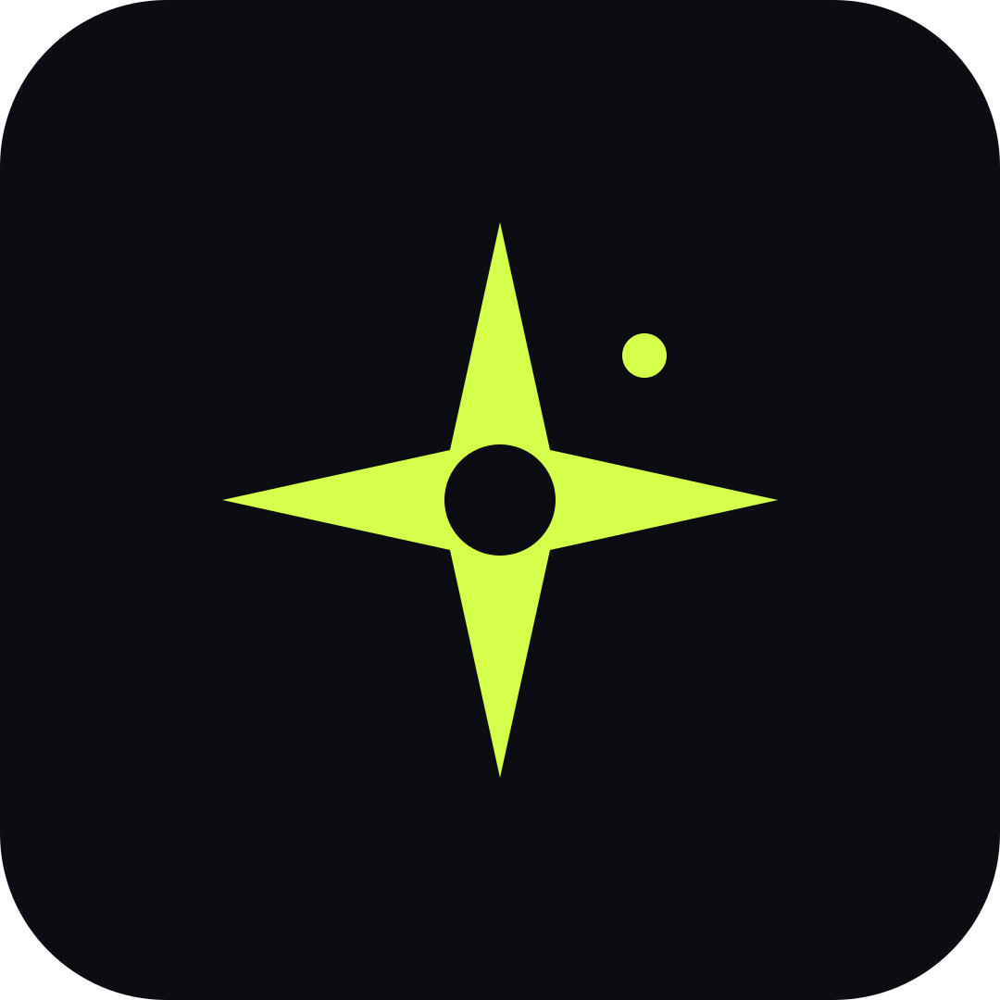

LOCAL SERVICE
More calls
answered.
Put the first reply, qualification, and callback request in one flow.
CLINICS / REPAIRS / HOME SERVICES

POLARISPolaris builds the parts of a business that answer, guide, and hand off work. Websites. Calling. Chat. WhatsApp.
01 / what we build
A customer can start anywhere. The handoff stays clear.
Pages that explain the offer, answer first questions, and point to the next action.
02Voice flows for enquiries, qualification, reminders, and handoff to a person.
03Answers that live on the site and move a visitor from question to action.
04Flows for bookings, updates, follow-ups, and the conversations a team repeats.
02 / the operating line
Every build has a beginning, a useful response, and a human handoff when it matters.
03 / where it fits
Start with a repeated task. We turn it into a system that the team can use.
LOCAL SERVICE
Put the first reply, qualification, and callback request in one flow.
CLINICS / REPAIRS / HOME SERVICES
APPOINTMENTS
Let a site or WhatsApp flow collect the details before the team replies.
SALONS / STUDIOS / CONSULTANTS
REPEAT WORK
Move reminders, updates, and status messages into the channel customers use.
RESTAURANTS / RETAIL / TEAMS
04 / working model
We map the work, build the first version, then keep the pieces that earn their place.
Offer, customer path, repeated questions, and the handoff that matters.
Design and implementation for the channels your customers already use.
Updates, improvements, and new flows as the team learns what works.
05 / questions
A few straight answers before a brief.
No. Polaris is for local businesses with customer questions, appointment requests, calls, or follow-up work that repeats.
Yes. The handoff is part of the build. The system should know when a person needs to step in and what context they need.
Not always. We start with the channels already in the business, then add only what the flow needs.
Scope comes first. The build and support plan follow the number of channels, the flow, and the integrations involved.
06 / start here
Tell us what customers ask, where the team loses time, and what should happen next. We’ll map the first system.
DM on Instagram